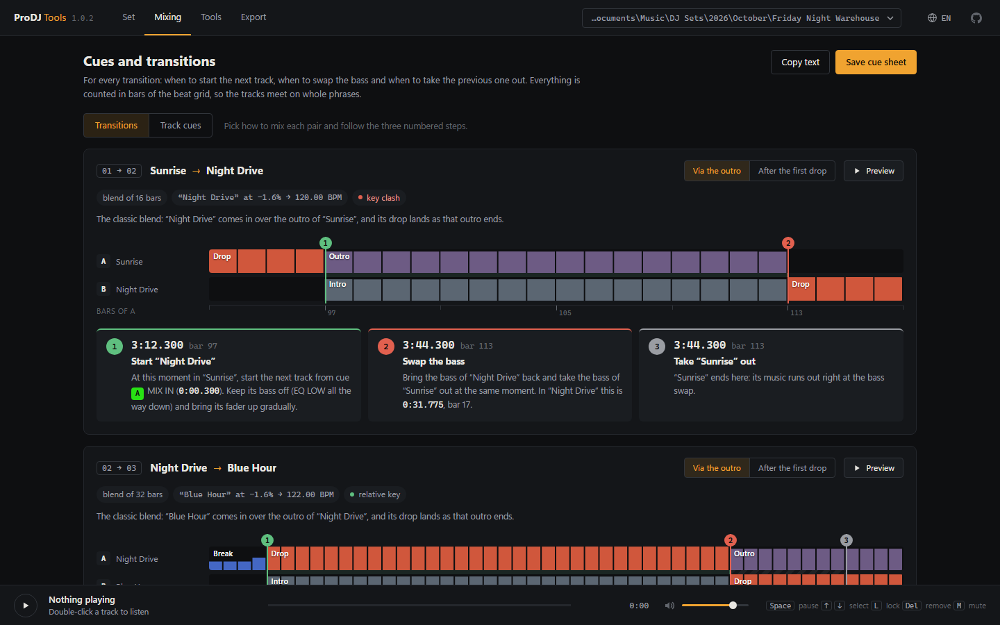
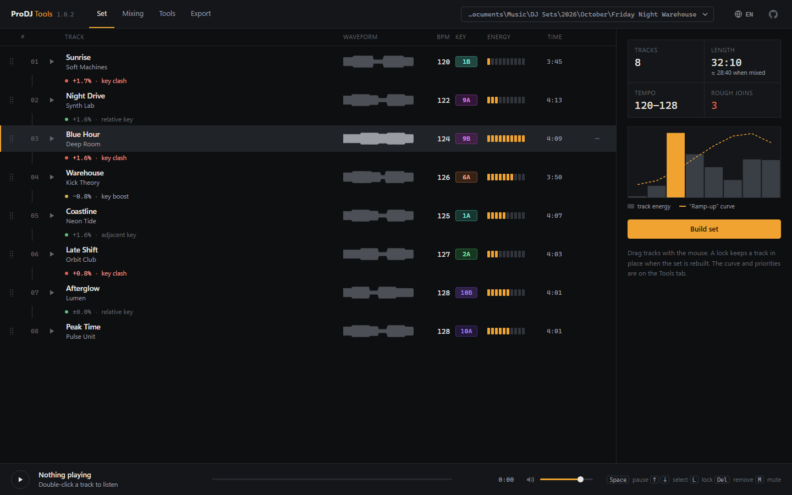
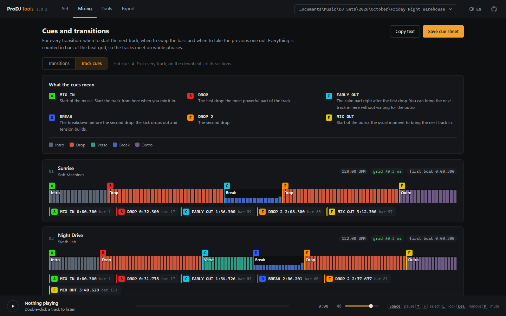
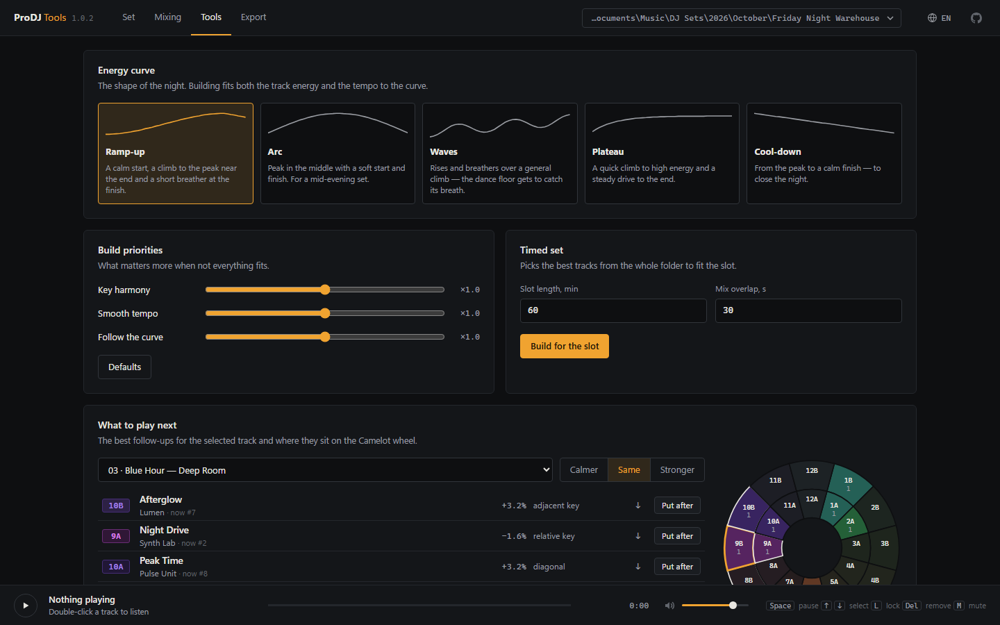

BPM and key detection
Tempo to a thousandth of a BPM, a beat grid to a fraction of a millisecond, keys on the Camelot wheel and the energy of every track.
Open a folder of tracks. ProDJ Tools detects the tempo, key and energy of every track, suggests an order for smooth harmonic mixing, places precise cue points and shows how to mix each pair.

Everything a DJ prepares by hand before a gig, done in a minute and written into the files that Rekordbox, Serato or any player will open.
Tempo to a thousandth of a BPM, a beat grid to a fraction of a millisecond, keys on the Camelot wheel and the energy of every track.
Orders your tracks for harmonic mixing without tempo jumps, following an energy curve: ramp-up, arc, waves, plateau or cool-down.
Intros, drops, verses, breaks and outros are found to the exact bar. Cues sit on the downbeats and go to Rekordbox as hot cues and memory cues.
When to start the next track, when to swap the bass and when to take the previous one out, with exact times and bar numbers. Two ways: via the outro or after the first drop.
House, techno, trance, drum and bass, dubstep, hip-hop, hardcore: for slow and fast tracks alike, cues follow the real bar.
Numbered files, set numbers and BPM in the tags, M3U8 playlists and a Rekordbox XML with the beat grid and cues. Everything can be undone with one button.
A button always means the same thing, on any track and in any genre.
| Button | Cue | Meaning |
|---|---|---|
| A | MIX IN | Start of the music: start the track from here when you mix it in. |
| B | DROP | The first drop: the most powerful part of the track. |
| C | EARLY OUT | The calm part right after the first drop: bring the next track in here without waiting for the outro. |
| D | BREAK | The breakdown before the second drop, when it follows a verse. |
| E | DROP 2 | The second drop. |
| F | MIX OUT | Start of the outro: the usual moment to bring the next track in. |
A dark interface in the spirit of DJ hardware, in 15 languages.



Three steps from a music folder to a finished set in Rekordbox.
Yes, completely. The source code is open under the MIT license.
Yes. The order goes into file names and tags that both read. For Rekordbox, an XML with the beat grid and cues A–F (hot cues and memory cues) is created as well.
FLAC, MP3 and WAV. Tags are written to FLAC and MP3.
No. The analysis runs on your computer; your music is never uploaded.
Not yet: Windows 10 and 11 only.
Before the first write, the original names and tags are backed up, and the "Restore files" button undoes every change.